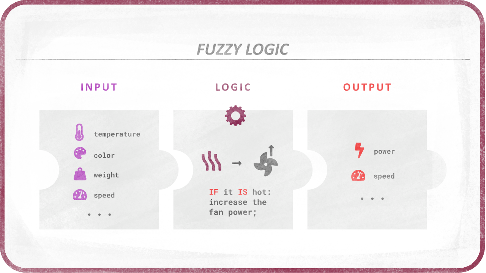

Fuzzy Logic
- Introduction
- Advantages
- Fuzzification
- Sets
- Operators: IS and IS NOT
- Shapes
- Rules and logic operators
- Operators Implementation
- Quantifiers
- Crispification
- Examples
- JavaScript: Color: Redness
- JavaScript: Complex example: HVAC
- Existing Libraries
Introduction to Fuzzy Logic
Fuzzy Logic is a way to replace Boolean logic when values may not be completely true or false, e.g. a temperature can be hot, but more precisely it can be just a bit hot or very hot.
Using Fuzzy Logic is a way to test the veracity of a statement, and get a nuanced result, which can then be used to set nuanced values according to the truthness, the veracity, obtained from the statement.
For example, if one wants to adjust the power of a fan, one needs to check the temperature and adjust the fan accordingly.
With boolean logic, the statement IF the temperature IS hot THEN SET the fan on will either turn the fan on at full power or completely off, according to a predefined limit value.
With Fuzzy Logic, both the veracity and the result being fuzzy and more nuanced, the same statement will adjust precisely the power of the fan according to the hotness. With a single simple rule like this, it is like a conversion (interpolation) of the temperature value into a power value.

But like Boolean logic, Fuzzy Logic becomes very interesting when combining veracity and rules. For example, it becomes easy to code a program with these rules:
IF the temperature IS hot THEN SET the fan on and SET the heater off IF the temperature IS warm THEN SET the fan off and SET the heater off IF the temperature IS cold THEN SET the fan off and SET the heater on
And if you combine other conditions and quantifiers, you can design quite a complex system:
IF temperature IS hot AND humidity is high THEN SET fan top speed IF temperature IS hot AND humidity is VERY low THEN SET fan moderate speed etc.
This logic can be used (and is used) in a lot of different domains and situation. Think about all kind of controls, auto-pilots, AI, animation…